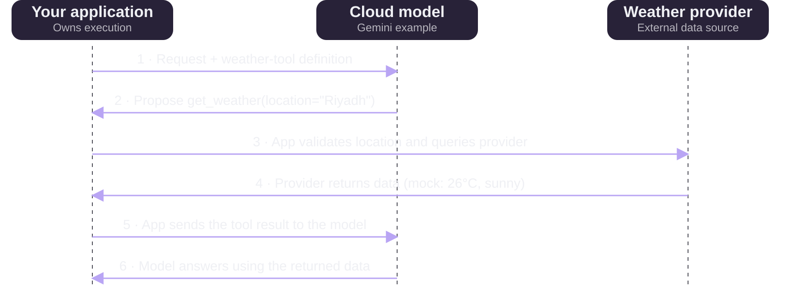
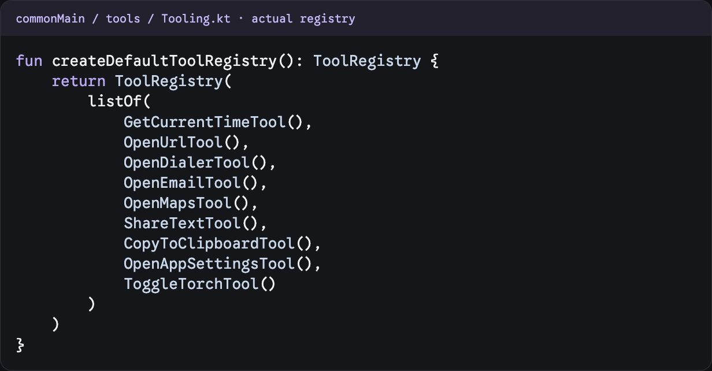
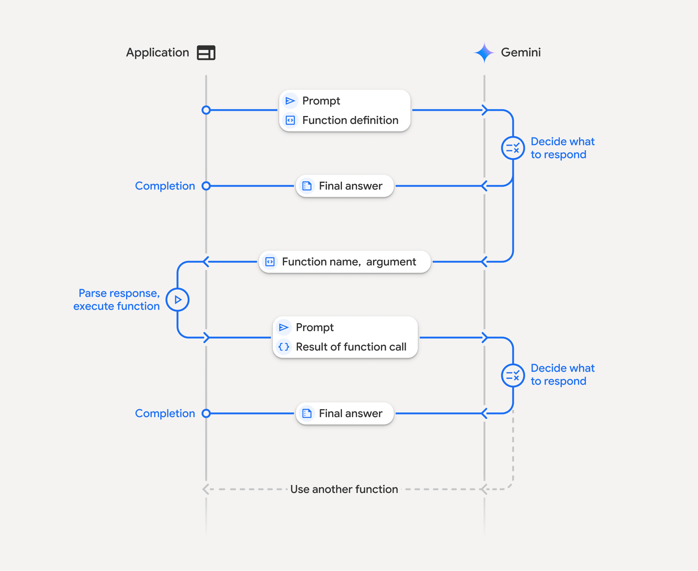

How cloud AI features work
The product reason
Keep the feature working without signal, once the model is provisioned.
Avoid sending this inference request to a cloud model.
Remove the cloud round trip. Still measure generation on the phone.
Avoid hosted-model request charges for this path; device resources still cost.
Choose per feature. Local inference trades cloud dependencies for model downloads, RAM, battery, heat and quality constraints.
Choose the job before the file
Extract, summarize or draft.
Gemma 3 1B IT
Text-only instruction model.
Use text with images or audio, where supported.
Gemma 4 E2B
Needs matching input pipelines.
Propose functions and arguments.
FunctionGemma 270M
Needs its own call protocol.
Base: trained for continuation. Instruct / IT: further trained to follow requests.
Training, input types and specialization overlap. These are examples, not verified demo artifacts.
M = million · B = billion learned parameters
The same runtime API can load different supported exports.
Changing models can also change the chat template, input types and tool protocol.
Examples to evaluate, not an exhaustive list or a claim that every variant was tested in this app. Larger sizes need more device resources.
Parameter count is not a download size
Family / generation · parameter count · instruction tuning
One billion learned numerical values.
270M means 270 million.
1B does not mean 1 GB.
FP16, INT8 or INT4 describes how numerical values are represented.
It changes storage per weight.
Parameter count × bits per weight → a first estimate of weight storage.
Bits per stored weight
Each stored code represents an approximate weight level.
8 bits = 1 byte
Two 4-bit codes fit in one byte, before format overhead.
FP16 · 16-bit floating point
INT8 · 8-bit integers
INT4 · 4-bit integers
More bits can represent more values. Quantization maps codes to approximate numerical levels.
Weight precision is separate from parameter count, context length and the phone’s 64-bit architecture.
Fewer stored levels · an approximation
Four codes map to four levels:
0.00 · 0.25 · 0.50 · 0.75
Approximation error: +0.02
Same weight count, fewer stored bits.
FP16 → 2.0 GB
INT8 → 1.0 GB
INT4 → 0.5 GB
1 billion × 4 bits ÷ 8
= 0.5 billion bytes
Idealized weight payload · decimal GB
Real formats add scales and metadata. Runtime RAM adds caches and buffers. Re-test quality; lower precision does not guarantee faster inference.
Weights → tokens → shared UI
Split text into pieces and map them to IDs. A token may be a word, part of a word or punctuation.
Process instructions, input and included history to build the working context.
Score possible next tokens, select one and append it. Repeat until a stop condition or output limit.
Input, history and output share one window. Leave room for the response.
Forward decoded chunks through Kotlin Flow. A chunk need not equal a tokenizer token.
LiteRT executes model computation · LiteRT-LM orchestrates language generation
Converted model components, tokenizer and metadata.
Manage model resources.
Run prefill + decode through LiteRT.
Expose conversations and streaming.
Build prompts, validate proposals and call native APIs.
MediaPipe’s LLM Inference API is in maintenance-only mode.
Google recommends migrating that API to LiteRT-LM.
This concerns MediaPipe’s LLM API, not every MediaPipe task. This repository uses LiteRT-LM through Kotlin and Swift.
Choose the artifact for your runtime
A bundle for LiteRT-LM.
Converted model + weights
Tokenizer
Model metadata
Choose a compatible pre-converted export for this integration.
Used by the older MediaPipe LLM route.
Some LiteRT-LM paths also recognize it.
Support depends on the model and runtime, not the suffix alone.
KMP: reuse a compatible bundle on Android and iOS.
Keep native runtime libraries and engine setup on each platform.
Match the export, runtime version and backend. Renaming a file does not convert its contents.
Kotlin Multiplatform
commonMain
↓ actual · Android
Callbacks → Kotlin Flow
Android native device APIs
↓ actual · iOS
Notifications → Kotlin Flow
iOS native device APIs
One shared contract. Platform-specific initialization, permissions and effects.
The shared Kotlin boundary
GemmaInference.ktexpect class GemmaInference() { suspend fun loadModel( modelPath: String, config: ModelConfig ) fun generateResponse( prompt: String ): Flow<String> }
Flow<String> lets the shared ViewModel collect text. Native callback and Swift stream handling stay behind the adapter.
inference.generateResponse(prompt)
.collect { chunk ->
answer += chunk
}
Actual app source · abridged · after the shared loadModel API
GemmaInference.android.kt · shortened initializationval engineConfig = EngineConfig( modelPath = modelPath, backend = backend, // Other limits omitted here. cacheDir = AndroidContextProvider .applicationContext.cacheDir.absolutePath ) val newEngine = Engine(engineConfig) newEngine.initialize()
InferenceBridge.swift · initialization excerptlet config = try EngineConfig( modelPath: modelPath, backend: .gpu, cacheDir: try cacheDirectoryPath() ) let newEngine = Engine(engineConfig: config) try await newEngine.initialize()
Android selects GPU, then CPU if initialization fails. This Swift bridge uses GPU.
Both load paths await native initialization. Token/image limits, checks and lifecycle handling are omitted from these excerpts.
Engine initialized → shared Kotlin request · inside a coroutine
Shared Kotlin · GemmaInference API · teaching examplevar answer = "" inference.generateConversationResponse( systemPrompt = "You are a Kotlin tutor. " + "Use plain language and two short sentences.", history = emptyList(), userPrompt = "What changes when a model " + "is quantized from FP16 to INT4?").collect { chunk -> answer += chunk }
Set the role and response constraints.
Ask the current question.
History is empty for this first turn.
The same shared call reaches the Android or iOS adapter.
Illustrative request using the app’s existing API. These are text chunks; UI state and error handling are omitted.
Tools and external information
The model’s eyes and ears.
Tools connect the model to APIs, device sensors and app data.
The model requests a function; your app executes it and returns the result.
Tools can retrieve information or perform an action.
Weather example · Google’s function-calling flow, adapted for the screen
“What is the weather in Riyadh today?” The model asks for current data; the app fetches it.

Adapted from Google Gemini API documentation; the original is in reference 32. Weather values are illustrative; this app has no weather tool.
Now switch to a local action · turn off the flashlight
SYSTEM You are an offline assistant. Available tool: toggle_torch Description: Turn the device flashlight on or off. Parameter: enable — required Boolean; true=on, false=off. Call it only when the user asks for that device action. Use a JSON Boolean and no extra arguments. For a tool call, return ONLY a proposal inside << >>. Example: <<{"tool":"toggle_torch","arguments":{"enable":true}}>> If no tool is needed, answer normally without a tool call. HISTORY: [] USER: Turn off the flashlight.
Expected proposal: <<{"tool":"toggle_torch","arguments":{"enable":false}}>>
Teaching request for a local device action. Local inference can work offline; a live weather lookup still needs network access.
Current shared implementation · Tooling.kt

ToggleTorchTool : ToolHandler
spec.name = "toggle_torch"
execute(arguments, context)
createDefaultToolRegistry()
→ ToolRegistry(listOf(
…, ToggleTorchTool()
))The shared registry contains nine app-provided handlers.
Each handler owns its ToolSpec; the prompt builder reads those definitions.
A proposed name selects its handler; that handler checks inputs and calls native code.
This is the project’s shared registry, not LiteRT-LM ToolSet registration. The model does not discover Kotlin functions.
From the registry to one implementation · commonMain + native actuals
Inside CopyToClipboardTool · Tooling.ktoverride suspend fun execute( arguments: JsonObject, context: ToolContext ): ToolResult { val text = arguments.str("text") ?: return ToolResult( spec.name, "Error: text parameter is required" ) val success = AppActionsProvider.copyToClipboard(text) return ToolResult( spec.name, if (success) "Text copied to clipboard" else "Failed to copy to clipboard" ) }
ToolSpec · description/schema abridgedToolSpec( name = "copy_to_clipboard", description = "Copy text to the clipboard.", parametersSchemaJson = """ {"type":"object", "properties":{"text":{"type":"string"}}, "required":["text"]} """ )
// Android · clipboard lookup omitted clipboard.setPrimaryClip( ClipData.newPlainText("Copied Text", text) ) // iOS UIPasteboard.generalPasteboard.string = text
Register this handler; its ToolSpec feeds the shared prompt. str is a project helper—these clipboard checks are simpler than the torch guard.
Actual app path · abridged · model already loaded
GemmaInference.android.kt · shortened excerptval config = ConversationConfig( systemInstruction = Contents.of(systemPrompt) ) val chat = engine.createConversation(config) chat.sendMessageAsync(userPrompt, callback) // callback forwards text to Kotlin Flow
InferenceBridge.swift · shortened excerptlet config = ConversationConfig( systemMessage: Message(systemPrompt, role: .system) ) let chat = try await engine.createConversation(with: config) for try await chunk in chat.sendMessageStream( Message(userPrompt, role: .user) ) { postToken(chunk.toString) }
Both return text. Shared Kotlin extracts and validates the same tool proposal.
Empty history shown. Callback, notification bridge, sampler settings and error handling are omitted here. Native tool execution comes after validation.
Shared Kotlin · ChatViewModel.kt · abridged
Nested GenerateResponseResult types importedgenerateResponseUseCase( systemPrompt = systemPrompt, messages = history, userPrompt = prompt ).collect { result -> when (result) { is Streaming -> updateStreamingMessage(result.partialResponse) is Complete -> { val call = result.toolCall if (call != null) handleToolCall(call, result.metrics) else finishStreaming(result.metrics) } is Error -> handleError(result.exception) } }
partialResponse is cumulative.
Appending it again would duplicate text.
A sealed result type makes when exhaustive.
Dispatch a tool after Complete, never from a half-written proposal.
Android SDK option · compatible tool-capable artifact required
SDK = Software Development Kit. LiteRT-LM can derive tool definitions from Kotlin functions.
Illustrative · import com.google.ai.edge.litertlm.*class TorchTools( private val run: (Boolean) -> String ) : ToolSet { @Tool(description = "Control torch") fun toggle_torch( @ToolParam(description = "Enable torch") enable: Boolean ): String = run(enable) }
LiteRT-LM Kotlin 0.14.0 · abridgedval config = ConversationConfig( tools = listOf(tool(torchTools)), automaticToolCalling = false ) val conversation = engine.createConversation(config) val reply = conversation.sendMessage(prompt) // App inspects reply.toolCalls.
Available SDK route, not this demo’s wiring. Current Android + iOS use prompted proposals. Swift also exposes native tool APIs.
Streaming · Startup policy · Tool protocols
Native chunks are deltas. Shared partialResponse is cumulative.
Append the chunks; replace the displayed snapshot.
Android tries GPU, then CPU if initialization fails.
The current iOS bridge initializes on GPU.
Our prompted JSON and SDK tool calls have different envelopes.
Normalize them before reusing shared handlers.
Share application logic. Make native policy and protocol choices explicit.
Live demo · model loaded · airplane mode on · Wi-Fi off
“Copy ‘Hello from offline AI’
to my clipboard.”
Watch the model’s proposal, the app’s result, and the text pasted on the phone.
1. Choose a compatible model bundle.
2. Share application logic in Kotlin.
3. Adapt native inference per platform.
LiteRT-LM documentation
Abdul Basit · OfflineAI-KMP source and setup
The feature we will build around
Our app UI · input screen only
“Sara will update the slides.
No deadline was agreed.”
One illustrative expected item
Task: update the slides
Owner: Sara
Deadline: null
Extract → check the source → review.
Illustrative expected output · one item
Sara will update the slides. No deadline was agreed.
Omar will record the Android demo by Friday.
Extract → preserve evidence → check fields → user reviews.
Friday belongs to Omar’s task.
Do not attach it to Sara’s task.
One item inside the response’s items array{ "task": "update the slides", "owner": "Sara", "deadline": null, "evidence": "Sara will update the slides." }
Exact source matches help catch invented fields. They do not prove the model understood the commitment.
Supplied-context grounding · fictional workshop FAQ
The Offline AI workshop takes place in Room Cedar on level 2.
{
"sourceId": "venue",
"quote": "The Offline AI workshop takes place in Room Cedar on level 2."
}{
"sourceId": null,
"quote": null
}The supplied reference has no answer.
Illustrative expected responses. Known source + exact quote are checked; question relevance still needs evaluation. No vector search is implemented in this demo.
Test cases, not measured results
“Turn off the flashlight.” → propose false; verify the device effect.
“Do not change the flashlight.” → expect no tool call.
A quoted Boolean or extra key → reject; expect zero native calls.
Record artifact + runtime + backend + device.
Measure cold load, first visible chunk and total completion; inspect the native effect.
Current app behavior
Import/load in Settings; wait for readiness. Keep the input available.
Show a validation error. Retain raw output for inspection; edit the input and retry.
Return an invalid-request result before calling the native function.
Stop generation, preserve the input, and let the user edit or retry.
Product extension: offer a manual workflow when generation cannot produce a useful result.
Original source · Google Gemini API documentation

Source: ai.google.dev/gemini-api/docs/function-calling · The main weather slide adapts this general pattern for readability.
Reference · execution responsibilities
Steps 1, 3 and 5 live in commonMain: definitions, validation and reporting.
Each platform connects to its runtime and native APIs. The model proposes; the app owns execution.
Reference · the iOS bridge
InferenceBridge.swiftlet conversation = try await engine.createConversation() let message = Message(prompt) for try await chunk in conversation.sendMessageStream(message) { postToken(chunk.toString) }
postToken forwards text through notifications. Kotlin observes the stream through callbackFlow. Cancellation and close are also forwarded.
// load waits for native initialization // cancel is forwarded to Swift // close clears native engine state
Reference · illustrative output
Expected JSON{"items":[{ "task":"update the slides", "owner":"Sara", "deadline":null, "evidence":"Sara will update the slides." }]}
parseNotes checks fields and source substrings. This expected output is illustrative, not a captured model run or proof of meaning.
{"items":[]}
Reference · text and meaning
Sara explicitly commits to updating the slides; her task can pass the source checks.
Sara is named in her evidence, while no deadline was agreed.
Friday is rejected using Sara's own sentence. A broader evidence span can still misattribute it.
Exact matching can pass a real discussion even when nobody committed to an action.
Source matching verifies text, not the meaning or intent of that text.
Reference · model compatibility
Choose the exact converted model file that the selected runtime can load.
Pin versions; SDK capability does not guarantee app-level support.
Check chat formatting, input types and context limits for the exact artifact.
Measure peak memory and latency on the target phone, including runtime caches.
Read the terms for the model artifact and its distribution.
Model families in practice
Gemma 31B IT
Text input. A compact instruction-tuned starting point.
Gemma 4E2B
Text, image and audio. Requires the matching app pipeline.
FunctionGemma270M
A tool-calling specialist, with its own call format and integration needs.
Start small. Use the smallest compatible artifact that passes your task checks.
Reference · grounding
[venue]
“Room Cedar on level 2.”
Null
No Wi-Fi password is supplied.
Reference · task selection
Extract fields from a short note. Let the user review the result.
Measure quality, latency and RAM with the exact model and device.
Small models can invent details or misread intent. A valid shape is not enough.
A missing model or failed generation should leave a usable manual path.
What implementing both platforms exposes
Android adapter
Try GPU initialization.
If it fails, try CPU.
Then attempt warm-up.
iOS adapter
Load waits for native initialization.
No CPU fallback in this bridge.
Keep native sampler defaults.
Measure the same phases on each device.
Both current adapters forward cancellation and close.
Shared signatures do not establish performance or behavior parity.
SDK illustration · requires a multimodal model and initialized vision backend
LiteRT-LM 0.14.0 · inside a coroutineval input = Contents.of( Content.ImageFile(imagePath), Content.Text("Describe this image.") ) engine.createConversation().use { chat -> chat.sendMessageAsync(input) .collect { chunk -> print(chunk.toString()) } }
Vendored Swift API · cleanup omittedlet input = Message(contents: [ .imageFile(imagePath), .text("Describe this image.") ], role: .user) let chat = try await engine.createConversation() for try await chunk in chat.sendMessageStream(input) { print(chunk.toString) }
The message now carries image content as well as text.
Not implemented in the current demo. Configure vision before engine initialization; connect a file picker/camera and readable image data.